Word Lanjutan: Halaman, Caption, Daftar Isi, dan Nomor Halaman
Jawab dulu tanpa takut salah, ini hanya untuk melihat titik awal kalian sebelum belajar.
Apa yang diatur?
Sebelum menulis dokumen panjang seperti laporan tahunan atau KTI, atur dulu halaman-nya: ukuran kertas, margin (batas tepi), dan orientasi. Pengaturan ini memengaruhi letak semua teks, jadi paling aman dilakukan di awal.
| Pengaturan | Arti | Standar prodi (Panduan KTI) |
|---|---|---|
| Size (ukuran kertas) | Ukuran lembar halaman | A4 (21 × 29,7 cm) |
| Margins (margin) | Jarak teks dari tepi kertas | Atas 4, kiri 4, bawah 3, kanan 3 cm |
| Orientation (orientasi) | Tegak (Portrait) atau mendatar (Landscape) | Portrait |
Langkah 1: atur margin
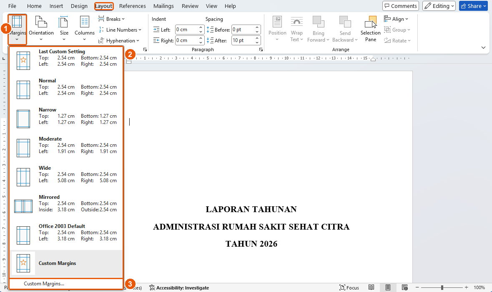
- Buka tab Layout, lalu klik Margins.
- Pilihan siap pakai seperti Normal atau Narrow belum tentu sesuai standar prodi.
- Klik Custom Margins... untuk mengisi ukuran sendiri.
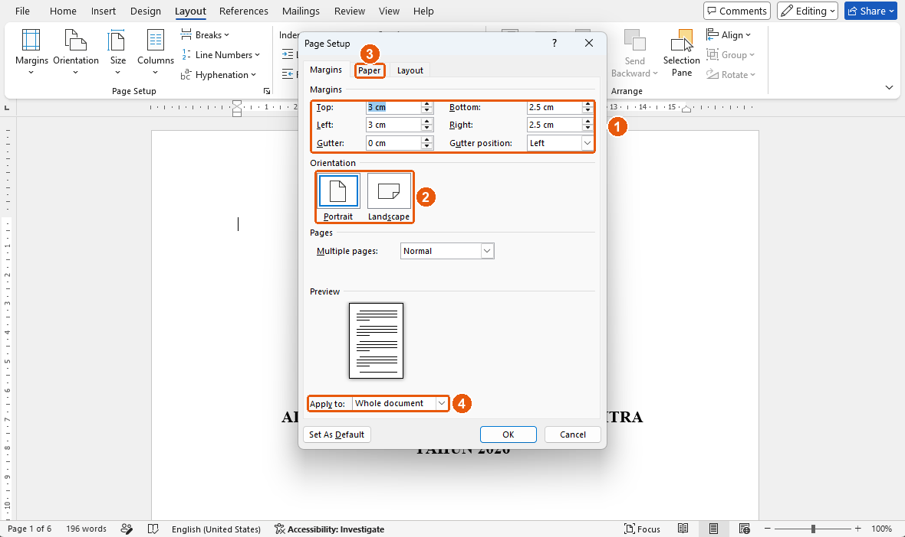
- Isi Top, Left, Bottom, dan Right sesuai standar (4, 4, 3, 3 cm).
- Pilih Orientation: Portrait untuk laporan biasa.
- Buka tab Paper untuk memilih ukuran kertas A4.
- Apply to: pilih Whole document agar berlaku untuk seluruh dokumen. Klik OK.
Langkah 2: membuat halaman baru dengan benar
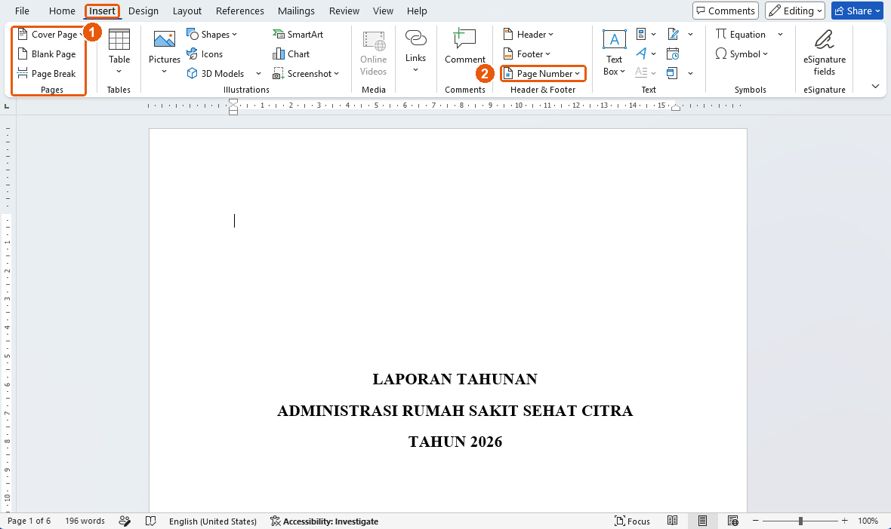
- Tab Insert, grup Pages: Cover Page (halaman sampul siap pakai), Blank Page (sisip satu halaman kosong), dan Page Break (pindah ke halaman baru). Jalan pintas Page Break: Ctrl + Enter.
- Tombol Page Number untuk nomor halaman, dibahas di bagian akhir pertemuan ini.
Cek pemahaman
Bagaimana daftar isi otomatis bekerja?
Word menyusun daftar isi dari teks yang memakai Style Heading. Judul bab diberi Heading 1, sub-bab diberi Heading 2. Word lalu mencatat judul dan nomor halamannya, sehingga daftar isi tidak perlu diketik manual dan tidak ada nomor halaman yang salah.
| Bagian dokumen | Style | Contoh |
|---|---|---|
| Judul bab | Heading 1 | BAB I PENDAHULUAN |
| Sub-bab | Heading 2 | 1.1 Latar Belakang |
| Isi paragraf | Normal | Teks biasa |
Langkah 1: beri Style Heading pada judul
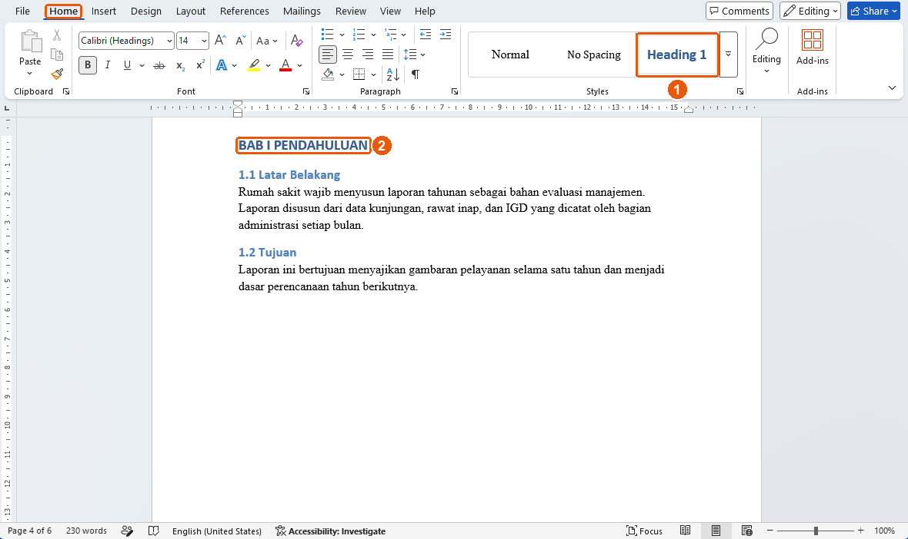
- Klik di judul bab, lalu di tab Home grup Styles klik Heading 1. Untuk sub-bab, pilih Heading 2.
- Judul berubah tampilan sesuai style. Tampilan bisa diubah (klik kanan style, lalu Modify) tanpa menghilangkan fungsinya.
Langkah 2: sisipkan daftar isi
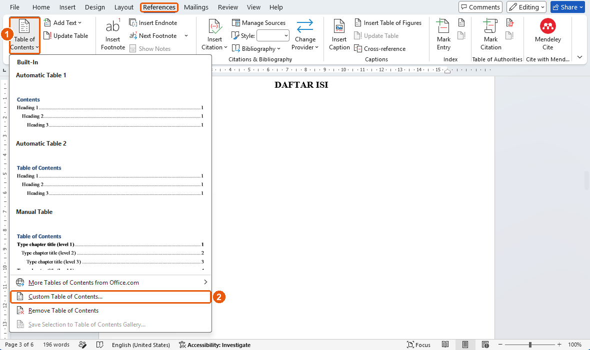
- Letakkan kursor di halaman DAFTAR ISI. Buka tab References, klik Table of Contents.
- Pilih Custom Table of Contents... agar judul "DAFTAR ISI" milikmu tidak tertumpuk judul bawaan. Pilihan Automatic Table juga bisa dipakai, tetapi ikut menambah judul "Contents".
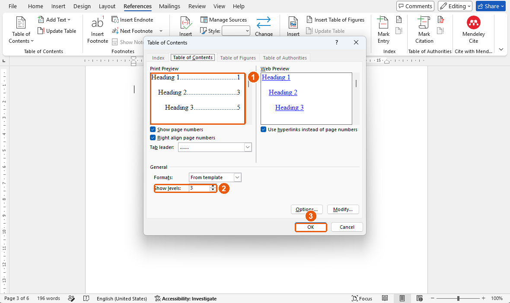
- Print Preview menampilkan contoh hasilnya, lengkap dengan titik-titik (tab leader) dan nomor halaman rata kanan.
- Show levels: jumlah tingkat heading yang ditampilkan. Isi 2 untuk bab dan sub-bab.
- Klik OK.
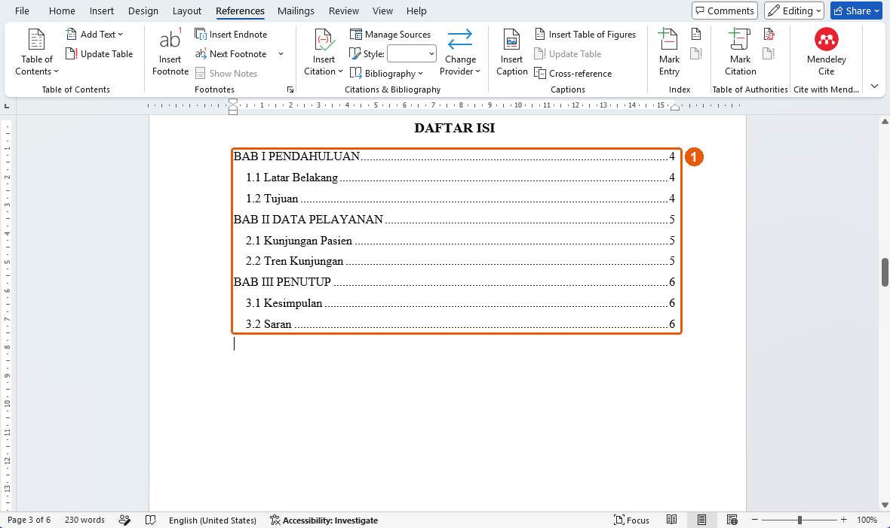
- Daftar isi terbentuk lengkap dengan nomor halaman. Tahan Ctrl lalu klik salah satu baris untuk melompat ke bab tersebut.
Langkah 3: perbarui daftar isi
Daftar isi tidak berubah sendiri ketika judul atau nomor halaman berubah. Perbarui setiap kali selesai mengedit.
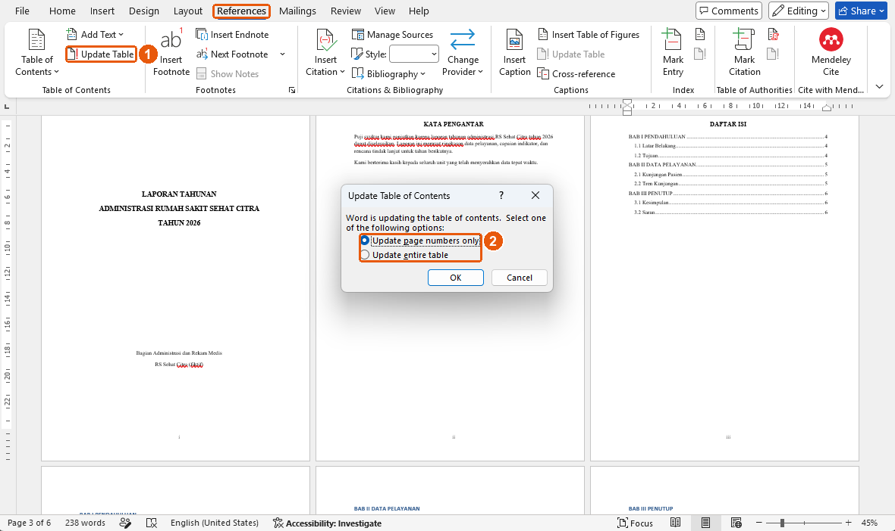
- Di tab References, klik Update Table (atau klik kanan daftar isi, lalu Update Field).
- Pilih Update page numbers only kalau hanya nomor halaman yang berubah, atau Update entire table kalau ada judul yang ditambah, dihapus, atau diganti.
Cek pemahaman
Referensi (Microsoft Support, diakses 26 November 2026):
1. Insert a table of contents
Apa itu caption?
Caption adalah judul bernomor untuk tabel dan gambar, misalnya Tabel 1. Kunjungan pasien per bulan. Nomornya dibuat Word secara otomatis, jadi kalau ada tabel baru disisipkan di tengah, nomor tabel sesudahnya ikut menyesuaikan.
Langkah 1: buka Insert Caption dan buat label "Tabel"
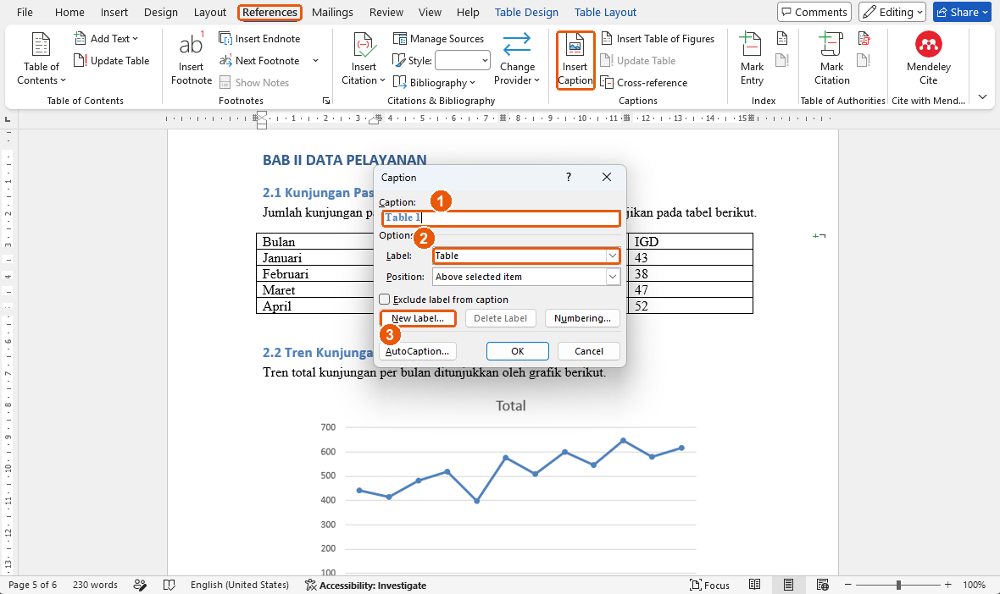
- Klik di dalam tabel, lalu di tab References klik Insert Caption. Kotak Caption sudah berisi label dan nomor.
- Label bawaan Word berbahasa Inggris (Table, Figure, Equation).
- Klik New Label..., ketik Tabel, lalu OK. Lakukan juga untuk label Gambar. Label ini cukup dibuat sekali.
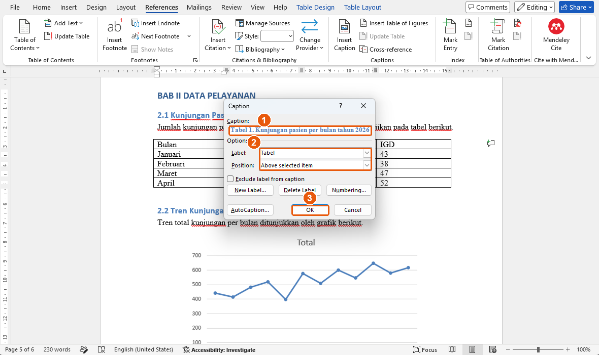
- Lengkapi kotak Caption di belakang nomornya, misalnya Tabel 1. Kunjungan pasien per bulan tahun 2026.
- Pastikan Label = Tabel dan Position = Above selected item (di atas tabel).
- Klik OK.
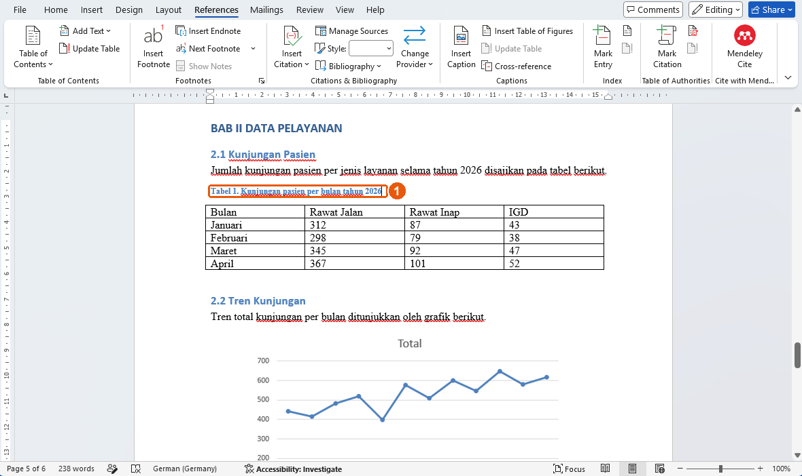
- Caption muncul di atas tabel. Angka 1 adalah nomor otomatis dari Word.
Untuk gambar atau grafik: klik gambarnya, buka Insert Caption, pilih label Gambar dan Position Below selected item. Setelah semua caption dibuat, References > Insert Table of Figures menyusun Daftar Tabel dan Daftar Gambar secara otomatis, sama seperti daftar isi.
Cek pemahaman
Referensi (Microsoft Support, diakses 26 November 2026):
1. Add, format, or delete captions in Word
Page Break atau Section Break?
Laporan dan KTI biasanya memakai dua jenis nomor halaman: halaman depan (kata pengantar, daftar isi) bernomor romawi i, ii, iii, sedangkan isi mulai BAB I bernomor 1, 2, 3. Agar bisa berbeda, dokumen harus dibagi menjadi beberapa section (bagian).
| Page Break | Section Break (Next Page) | |
|---|---|---|
| Fungsi | Pindah ke halaman baru | Pindah ke halaman baru dan memulai section baru |
| Pengaturan halaman | Sama dengan halaman sebelumnya | Boleh berbeda: format nomor, header/footer, orientasi, margin |
| Contoh pemakaian | Memulai bab baru | Batas antara halaman depan (i, ii, iii) dan isi (1, 2, 3) |
Langkah 1: sisipkan Section Break
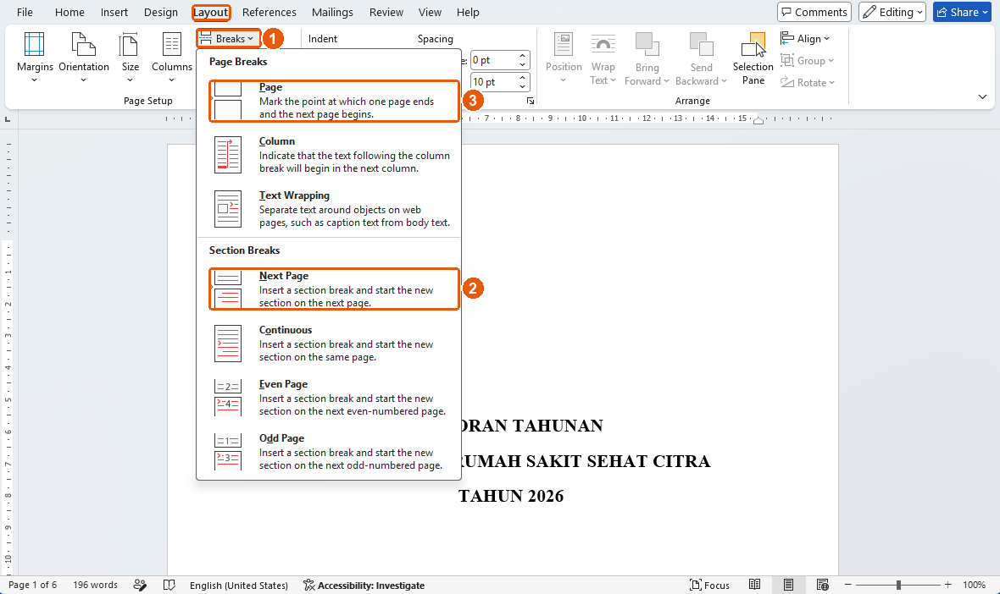
- Letakkan kursor di awal judul BAB I. Buka tab Layout, klik Breaks.
- Pada kelompok Section Breaks, pilih Next Page. BAB I pindah ke halaman baru sekaligus menjadi section 2.
- Bedakan dengan Page di kelompok Page Breaks yang hanya memindahkan halaman.
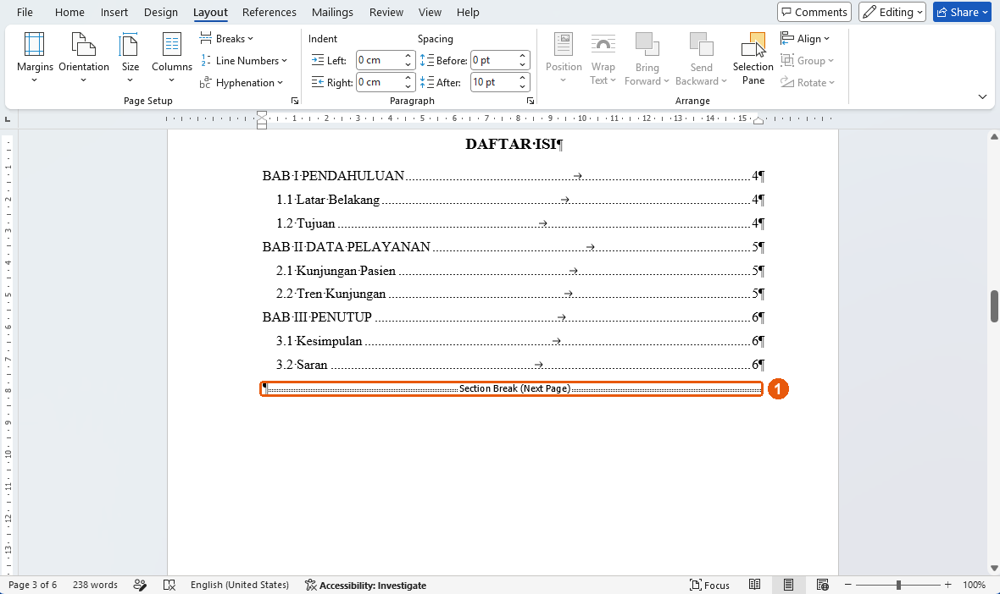
- Klik tombol ¶ (Show/Hide) di tab Home untuk melihat tanda Section Break (Next Page). Kalau ada Page Break sisa di tempat yang sama, hapus agar tidak muncul halaman kosong.
Langkah 2: sisipkan nomor halaman
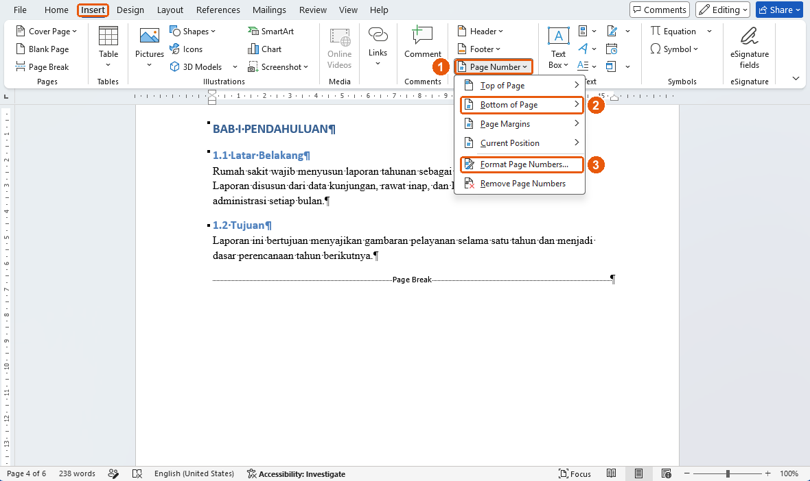
- Buka tab Insert, klik Page Number.
- Pilih letak nomor, misalnya Bottom of Page (bawah halaman).
- Format Page Numbers... dipakai untuk mengubah bentuk nomor dan nomor awal (langkah 3).
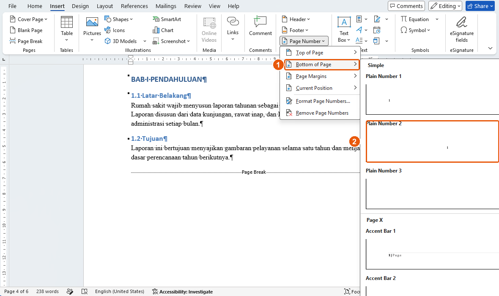
- Pilih Plain Number 2 untuk nomor di tengah bawah.
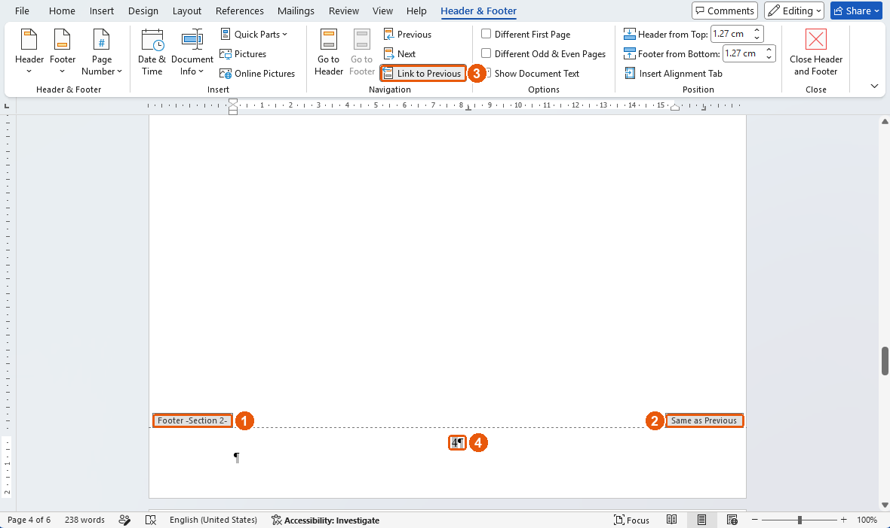
- Footer terbuka dan diberi label Footer -Section 2-, tanda kita berada di section isi.
- Same as Previous berarti isi footer ini masih tertaut ke section sebelumnya.
- Tombol Link to Previous memutus atau menyambung tautan itu. Putuskan kalau isi footer (misalnya teks atau letak nomor) harus berbeda antar section.
- Nomornya masih 4 karena melanjutkan hitungan dari halaman depan. Ini diperbaiki di langkah berikutnya.
Langkah 3: atur format nomor per section
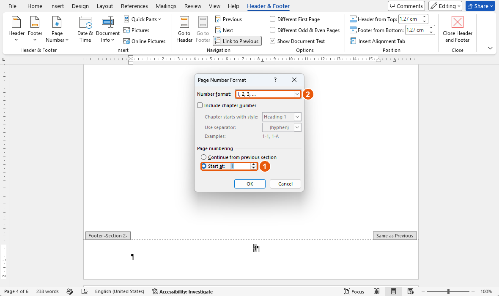
- Masih di footer section 2: tab Header & Footer, Page Number > Format Page Numbers. Pilih Start at dan isi 1, agar BAB I dimulai dari halaman 1.
- Number format tetap 1, 2, 3, .... Klik OK.
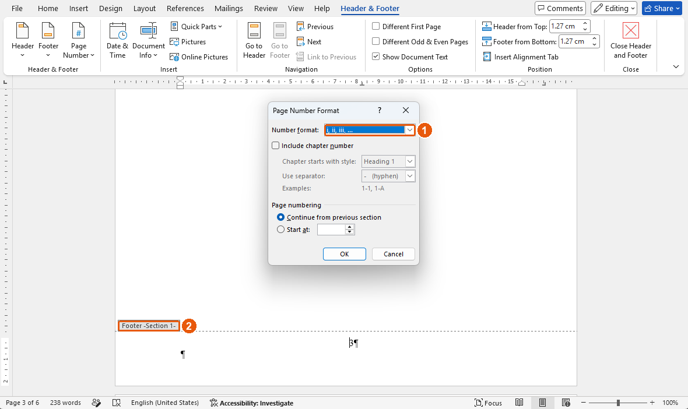
- Pindah ke footer section 1 (tombol Previous), buka lagi Format Page Numbers, lalu pilih Number format i, ii, iii, ... untuk halaman depan. Klik OK.
- Pastikan labelnya Footer -Section 1-.
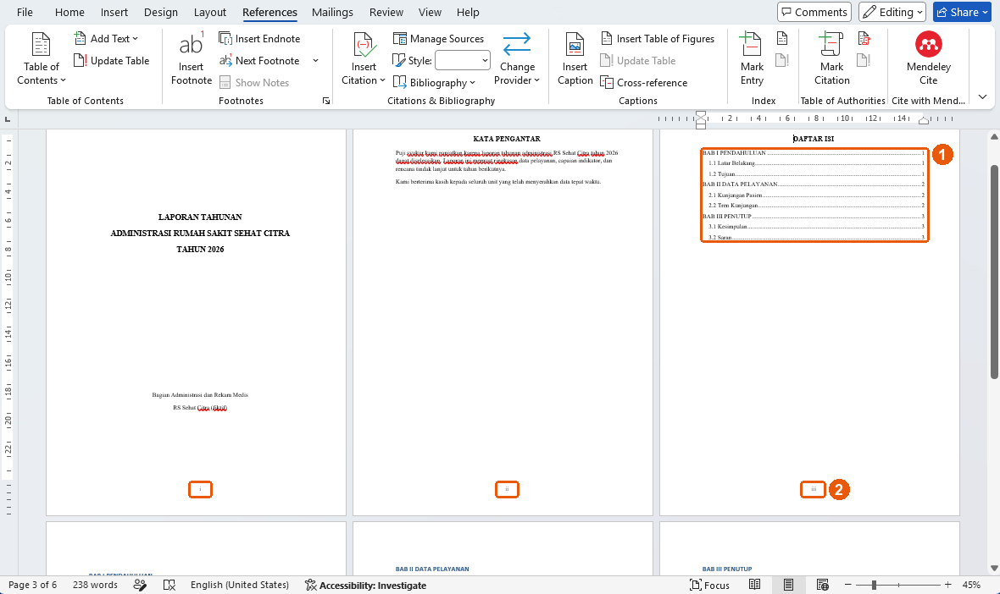
- Setelah Update Table, daftar isi menunjuk BAB I di halaman 1, BAB II di halaman 2, dan BAB III di halaman 3.
- Halaman depan bernomor i, ii, iii.
Langkah 4: nomor di awal bab (tengah bawah) dan halaman berikutnya (kanan bawah)
Pada laporan dan KTI, nomor halaman biasanya diletakkan di tengah bawah pada halaman pertama setiap bab, sedangkan halaman berikutnya di kanan bawah. Karena letaknya berbeda di halaman pertama, dipakai fitur Different First Page. Fitur ini berlaku per section, jadi setiap bab harus menjadi section sendiri: sisipkan Section Break (Next Page) sebelum BAB I, BAB II, BAB III, dan seterusnya.
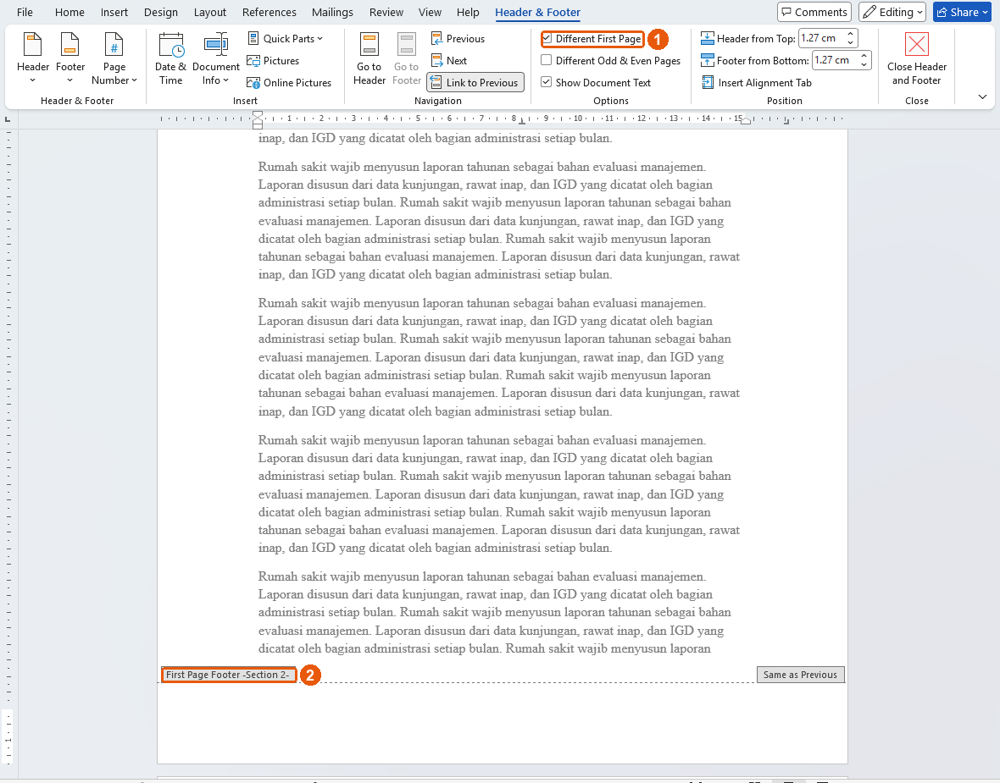
- Buka footer halaman pertama bab (klik dua kali area bawah halaman, atau Insert > Footer > Edit Footer), lalu centang Different First Page di tab Header & Footer.
- Label footer berubah menjadi First Page Footer: footer halaman pertama kini terpisah dari footer halaman lainnya.
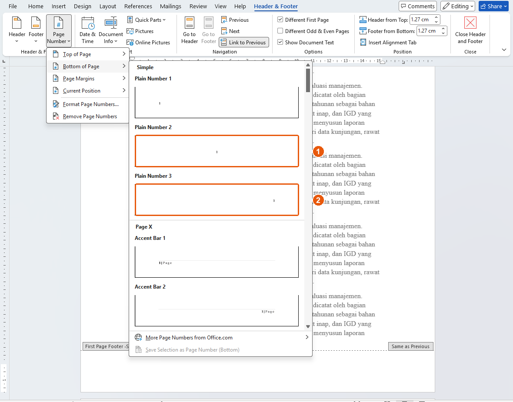
- Di First Page Footer, pilih Page Number > Bottom of Page > Plain Number 2 (tengah).
- Klik Next untuk pindah ke footer halaman berikutnya, lalu pilih Plain Number 3 (kanan).
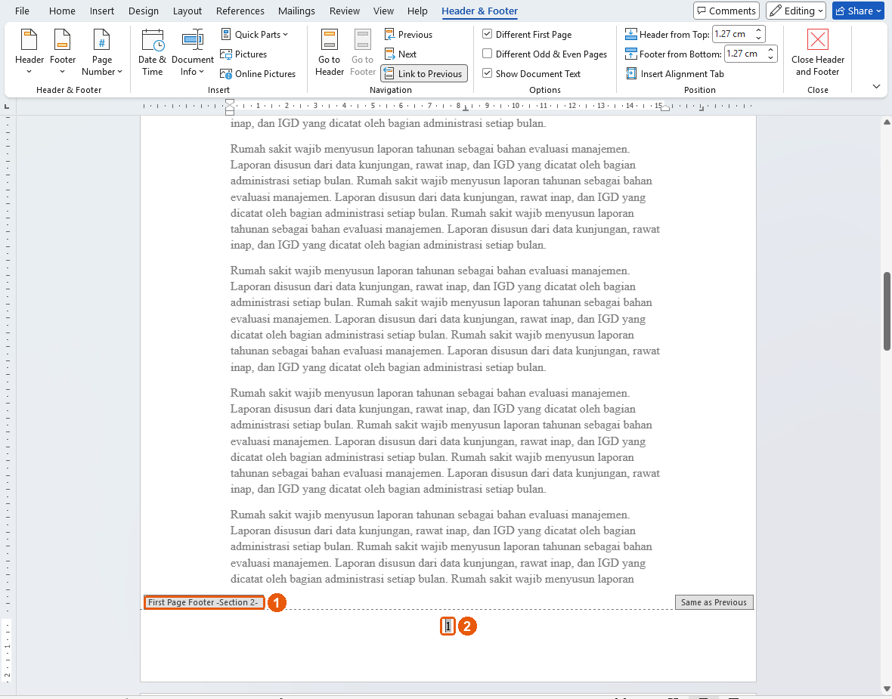
- First Page Footer -Section 2-: halaman pertama BAB I.
- Nomor 1 berada di tengah bawah (sudah diatur Start at 1 seperti langkah 3).
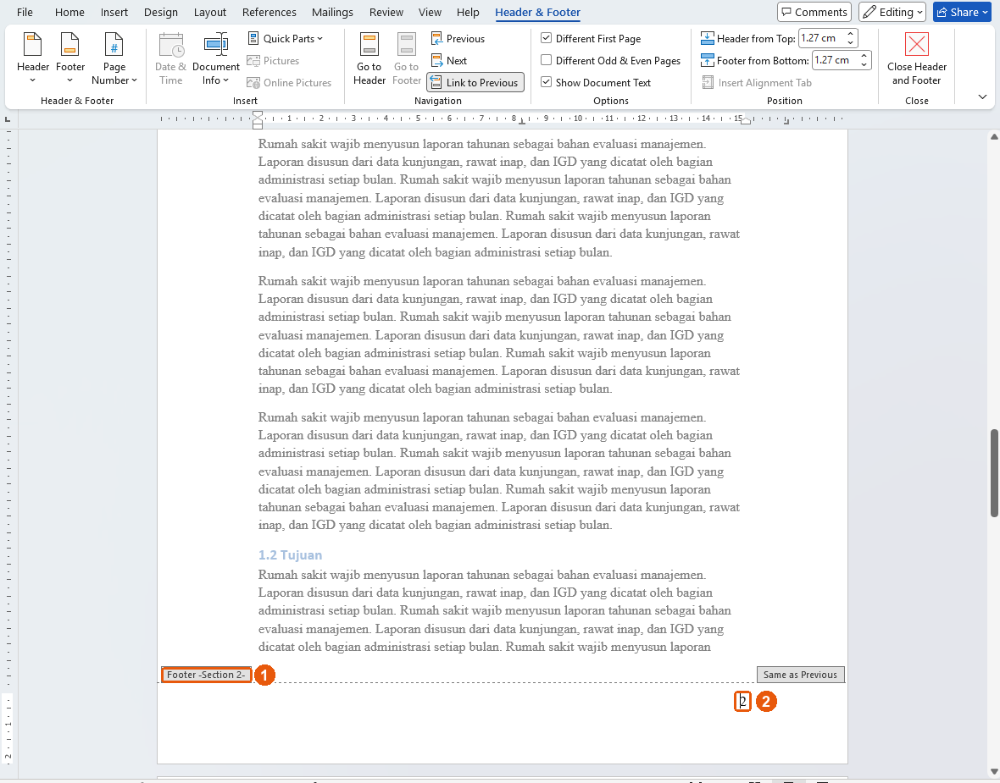
- Footer -Section 2-: halaman kedua dan seterusnya dalam BAB I.
- Nomor 2 berada di kanan bawah.
Cek pemahaman
Referensi (Microsoft Support, diakses 26 November 2026):
1. Insert a section break
2. Insert page numbers
3. Start page numbering later in your document
Tugas Lab: Merapikan Laporan Tahunan Rekam Medis di Word Nyata
Kasus: Bagian Rekam Medis RS Harapan Bersama (fiktif) sudah menulis isi laporan tahunan, tetapi belum dirapikan: belum ada daftar isi, tabel dan gambar belum berjudul, dan belum ada nomor halaman. Rapikan dokumen berikut.
- Atur halaman: A4, Portrait, margin atas 4, kiri 4, bawah 3, kanan 3 cm.
- Susun halaman: sampul, KATA PENGANTAR, DAFTAR ISI, DAFTAR TABEL, dan DAFTAR GAMBAR masing-masing di halaman sendiri (Page Break). BAB I, BAB II, dan BAB III juga selalu mulai di halaman baru.
- Beri Heading 1 pada judul bab dan Heading 2 pada sub-bab.
- Beri caption pada 2 tabel (label Tabel, di atas tabel) dan 2 grafik (label Gambar, di bawah gambar), lengkap dengan judul yang jelas.
- Sisipkan daftar isi otomatis, Daftar Tabel, dan Daftar Gambar (Insert Table of Figures).
- Sisipkan Section Break (Next Page) sebelum BAB I, BAB II, dan BAB III, sehingga setiap bab menjadi section sendiri.
- Nomor halaman: halaman depan i, ii, iii di tengah bawah (sampul tanpa nomor). Isi mulai 1: halaman pertama setiap bab di tengah bawah dan halaman berikutnya di kanan bawah (Different First Page di setiap bab).
- Update daftar isi, Daftar Tabel, dan Daftar Gambar, lalu simpan sebagai Nama_NIM_P06.docx dan kumpulkan.
Kriteria penilaian: 1) Pengaturan halaman sesuai standar. 2) Style Heading dan daftar isi otomatis benar dan sudah diperbarui. 3) Caption tabel dan gambar lengkap, bernomor, dan letaknya benar, beserta Daftar Tabel dan Daftar Gambar. 4) Section break dan penomoran halaman benar (romawi untuk halaman depan, angka mulai 1 untuk isi, sampul tanpa nomor, halaman awal bab di tengah bawah dan halaman lain di kanan bawah). 5) File .docx dengan nama yang sesuai.
Jawab setelah mengikuti seluruh materi. Bandingkan dengan skor pre-test kalian.
Perbandingan Pre-test vs Post-test
Ringkasan 5 Poin Kunci
- Atur halaman di awal: A4, margin standar, orientasi. Pindah halaman pakai Page Break (Ctrl+Enter), bukan Enter berulang.
- Style Heading (Heading 1 untuk bab, Heading 2 untuk sub-bab) adalah syarat daftar isi otomatis.
- Daftar isi disisipkan dari References > Table of Contents dan harus di-Update setiap kali dokumen berubah.
- Caption memberi nomor otomatis: tabel di atas, gambar di bawah. Daftar Tabel dan Daftar Gambar dibuat dengan Insert Table of Figures.
- Section Break memungkinkan nomor halaman berbeda: halaman depan i, ii, iii dan isi mulai 1. Different First Page membuat halaman awal bab bernomor di tengah bawah, halaman lain di kanan bawah.
Refleksi
Tindak lanjut: Pertemuan 07: Microsoft Excel Dasar. Mulai sekarang, pakai fitur hari ini untuk setiap laporan dan tugas panjang, termasuk KTI.